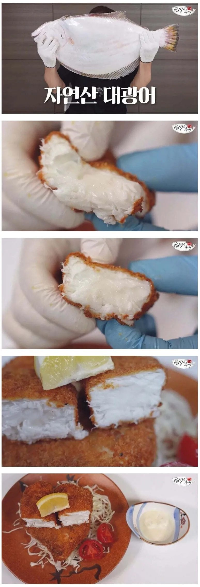

살 도톰한거 보소

살 도톰한거 보소
저 대광어를 저렇게 쓰다니 ㅠㅠ...대광어야 미안해
??? : 돌돔으로 매운탕 해먹었습니다
ㅋㅋㅋㅋㅋㅋ
뚊까쓰...
니 금으로 칼갈아 쓰라
돌돔 매움탕은 못먹어 봤지만
우럭은 회보다 매운탕이 훨씬 맛있잖아
내 입에만 그런가?
저게 산란기 끝나고 자연산으로 잡힌건데 기생충 문제도 좀 있고 맛이랑 식감도 횟감으론 좀 아쉽다고 함
대신 크기도 크고 양식보다 저렴한 시기라 조리해 먹기엔 맛있대
머야 시기가 중요한데 저때 시기가 그 시기면 저렇게 먹어도 합법이지
나도 저때 존나 큰놈 먹어봤는데 2-3키로 짜리 양식보다 못함 찰지고 쫀득한 느낌이 떨어짐
자연산광어는 씨알 커도 양식보다 맛없는거같음
양식 성공하신분은 페이커급 기습숭배 받아야함
일반적인 이야기로는 양식이 더 맛나다는게 맞긴한데...
자연산도 양식으로는 절대 안키울 크기 넘어가고 산란철 이전이면 많이 다름
8kg쯤 넘어가고 겨울에 잡힌거는 기름기가 양식에 비해 딸리지도 않는데 거기다 가장 큰 차이는 양식 특유의 무언가 특이한 향같은게 없어
통상 양식광어의 그 향이 있어도 기름기가 압도적이라 양식보다 자연산인건데 대물 제철은 그 향은 없으면서 기름기가 충분하다 이렇게 보면돼야
타르타르소스 제대로 만들어서 찍어 먹으면 개맛있겠다
토요일에 대광어 존나조져버린다
제대로된 암컷이다
ㅅㅂ 생선까스가 치즈덩어리처럼 보이는 마법이라니 ㅋㅋㅋ
와...야들야들하겠다
원물이 좋으니까 비록 생선까스여도 고급이 되는군
대광어 배낚시로 잡아서 회로 먹어봤는데 제철이 아닌건지 맛 없었음
양식이 나은듯?
맛은 똑같지 않나 ㅋㅋㅋ
저건 존나 다를듯
생선 뭐 쓰느냐에 따라 다르더라
난 달고기로 만든 까스가 그렇게 맛있더라
60넘는 대광어 잡아 썰어봤는데,, 등뼈에서 사골 국물이 나온다


난 광어가 너무 좋아
방어 연어 다필요없어 광어가 최고야
광어가 젤 맛있음 ㅇㅈ
사실 높은확률로 맞는말이긴함
후회는 없겠군
우리집은 달고기로 생선까스 하는데
달고기가 존나맛있지
억수로 부드럽네~ 육즙도 흥건하네~
이거 완전 암컷아저씨
야하네
부드럽고 맛있어봐야 통상 생선의 12~13배...
조오오오오온나 맛있다!!!!!!!!
어흐어흐
뭐는 회로먹어야 제맛이네 ㅇㅈㄹ 개호들갑떠는새기들 돈까스도 생고기로 쳐먹어야함
먹고싶은대로 먹는거지
암살도구 대방어 가시!!
광어 어차피 싼맛에 먹는 물고기아냐?
크면 뭔가 다른가?
우리나라는 양식이 되니까 싼거고
원래는 고급어종이라나? 어딘가 지나가다 봄
진짜 생선에 대해서 모르는 것 같은데, 광어가 원래 고급어종임. 양식 성공해서 싼거.
싸 진거지. 애초에 맛난거라고!
광어는 서더리만 먹어도 게살처럼 보들보들하잖아

존나 맛있긴 하겠다